Trabalhos
Tema 1
Olá, reservei esta aba para mostrar um pouco dos meus estudos/trabalhos, do aprendizado que obtive nas aulas da faculdade Uninter, do curso de engenharia de software, boa navegação! 😀
Antes de começar gostaria de ressaltar a importância de aprender o sentido lógico para à prática de linguagens de programção e abrir este pârentese para a preparação básica de alguns conceitos matemáticos como algoritimo feito brilhantemente pelo professor e conceitos básicos sobre lógica matemática com o professor Ricardo Zanardini, do professor Vinicius Borin sistemas e programação, e por último de Design Wiston Fung. Achei importante ressaltar estes profissionais, não para fazer "média" com quaisquer pessoas ou instituições, como faço EAD nunca obtive contato real com nenhum deles, e sim pela didática e facilidade para passar o que é proposto, assim nos fazendo obter gosto pelo que fazemos e sempre a buscar algo a mais. Dito isto vamos aos temas.
Assim, como a maioria, estou apredendo e buscando desenvolver desde as habilidades mais básicas, para assim chegar as mais complexas, uma das minhas primeiras aulas na grande de engenharia de software nos mostrou o figma e figjam, um ótimo programa e gratuito, que nos permite fazer um brainstorm de ideias e organizá-las para começarmos nossas ideias, nos permitindo até simular algumas funcionalidades, e editar e fazer um layoults bem completos. Abaixo alguns exemplos feitos por mim:
Abaixo mostrarei um exemplo de layout com algumas fases de baixa fidelidade, ainda iniciais feitas do papel ao prototipo de média fidelidade usado no programa figma, que foi visto nas aulas de Design Digital 1, pelo professor Winston Fung.
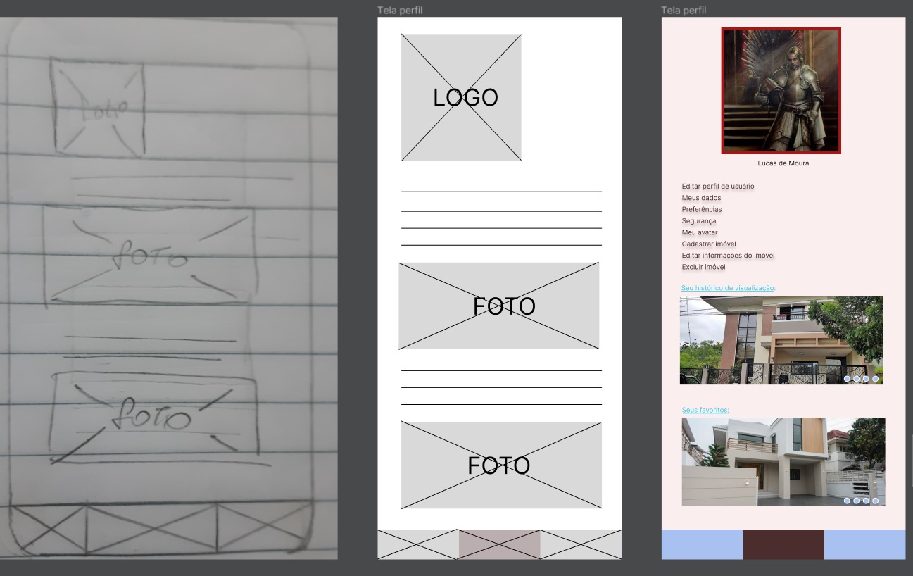
Como mencionado da esquerda para à direita, os prototipos de mais baixa fidelidade para o de média. Essa é uma tela de perfil de usuário, num site imobiliário. Como o objetivo aqui não é fazer uma síntese de o estudo e passo e contrução, mencionarei somente, brevemente, que antes deste passo temos o brainstorm de ideias, feitos por postits por exemplo, pensando nas melhores possibilidades para atender clientes. Seguindo das observâncias dos pontos fortes e fracos da empresa em questão.
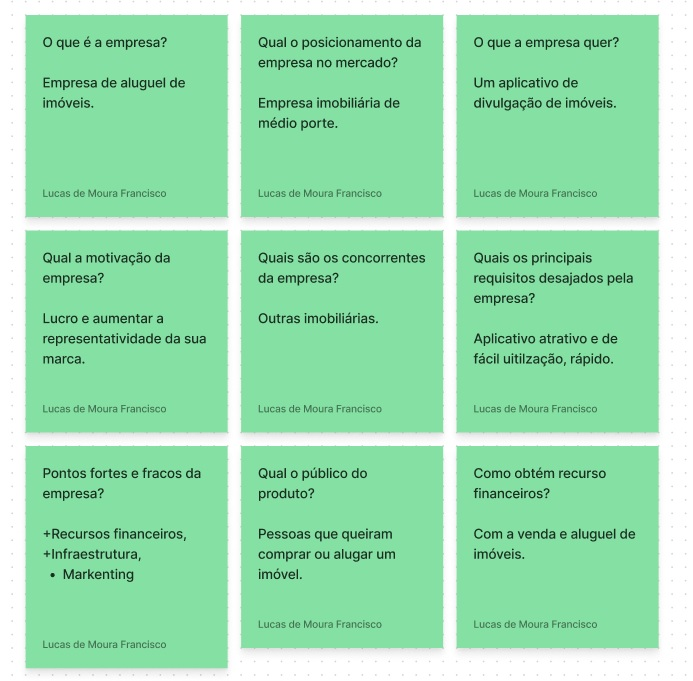
E fazendo estes levantamentos, temos o roteiro, que nos permite ter uma ideia de quantas telas iremos construir em nosso aplicativo ou site, dando melhor visualização do que será construído para o cliente, podendo dar uma melhor ideia do escopo, tempo, e investimentos necessários.
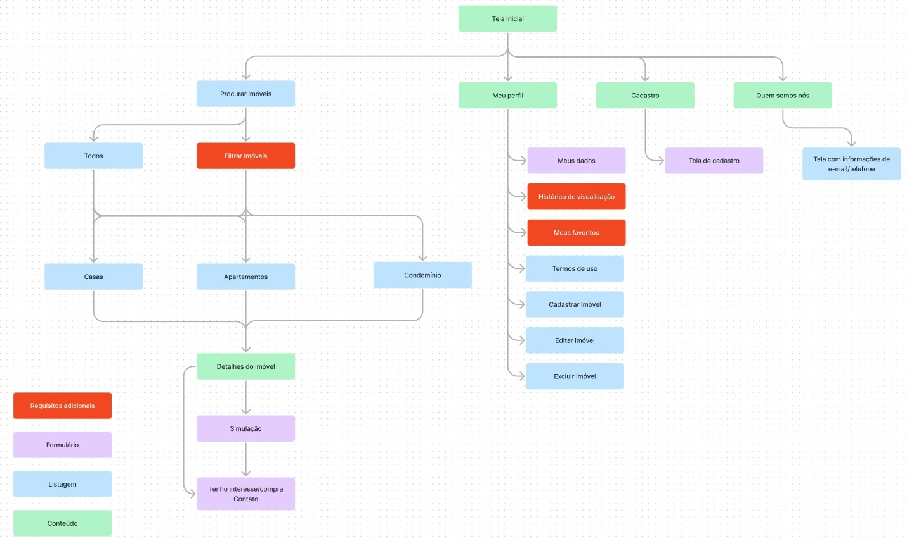
Todos estes levantamentos e passos são importantes para começarmos nossos projetos e buscar atender o que o cliente deseja, buscando sempre entregar o produto final com uma alta qualidade. A imagem a seguir mostra a quantidade de telas deste projeto.
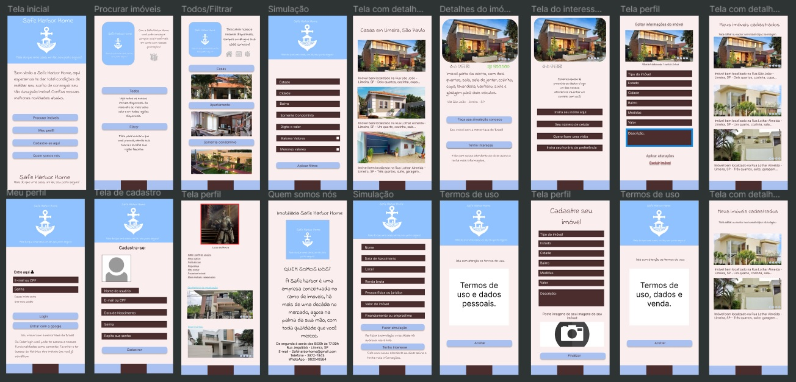
E abaixo você pode acessar o link do prototipo interativo de média fidelidade:
Protótipo de média fidelidade.
Tema 2
Aqui gostaria de apresentar o primeiro que eu subi na internet, não é nada complexo e nem todas funcionalidades estão lá, espero voltar e melhorar essa ideia no futuro. Ele contém apenas três páginas para observar o visual de uma ideia que obtive na atividade extensionista I na faculdade, a ideia era uma site de estudo, que pudesse chegar em várias camadas sociais, tendo uma fonte confiável, permitindo edição apenas daqueles que possuem comprovação técnica para fazê-lo. Sobrevivendo apenas de doações e daqueles que possuem vontade de fazer um algo a mais para o próximo.

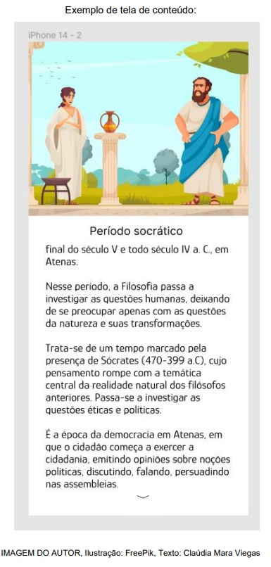
Abaixo você pode ver o primeiro site que publiquei(sujeito a alterações futuras), utilizando o GitHub, ele não possui formatação para visualização no celular no momento, mas funcionará normalmente no mesmo. Você pode comparar os layoults das imagens a cima com o site.
Tema 3
Agora iremos falar um pouco sobre a linguagem Python, minha matéria preferida até agora na faculdade. É uma linguagem muito poderosa, espero desenvolver algo nela e voltar aqui no futuro para mostrar algumas atualizações. Abaixo você verá alguns códigos desenvolvidos no trabalho das aulas de python lecionada pelo Vinicius Borin.A linguagem nos permite fazer códigos como criar pedidos, cardápio, armazenamento, calculando e retorno valores sendo ótimo para atedenter clientes e para o emprededor que irá utilizar a ferramenta como iremos ver. Códigos desenvolvidos no PyCharm.
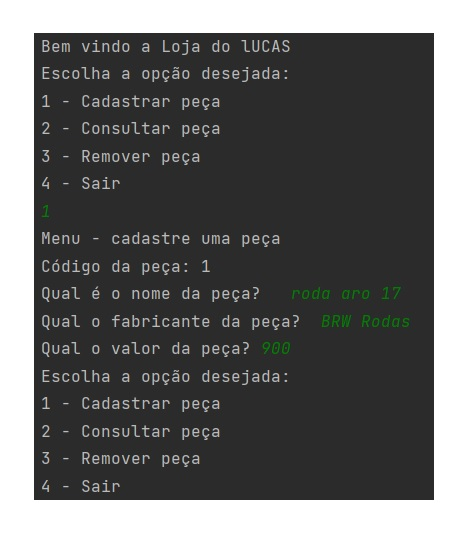
A imagem a cima nos mostra um aplicativo de armazenamento de peças, nele você possui a opção de cadastrar uma peça, consultar as peças cadastradas por código ou por fabricante, ou ainda visualizar todas as peças e com a opção de remover, caso não a tenha mais em estoque por exemplo. No exemplo da imagem a cima, vemos um cadastramento de peça de uma roda aro 17 e na imagem abaixo, fazemos a consulta e ela está listada lá, mostrando o funcionamento do código.
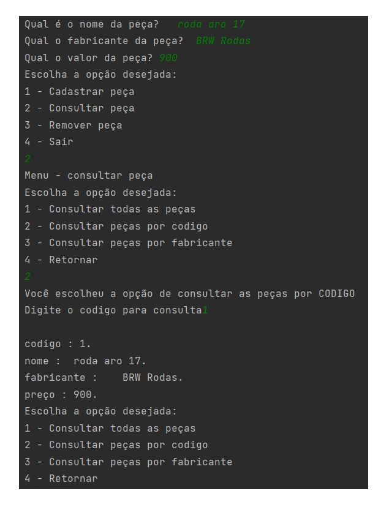
Logo após a cadastrar peça somos direcionados para o menu de consulta de peças, podendo retornar ao menu e encerrar o programa ou cadastrar/remover peças se assim for o desejo. Essa é apenas uma síntese do programa, mas ele possui funcionalidades menores para orientar o usuário, como informando erro de digitação, valores inválidos, e pedindo novos valores, deixando o programa rodando enquanto for necessário. Veremos mais um exemplo a seguir, mas agora de um cardápio online e em sequência pedidos, com o total monetário dos pedidos.
A imagem abaixo mostra o funcionamento de um cardápio eletrônico, em um código feito no python.
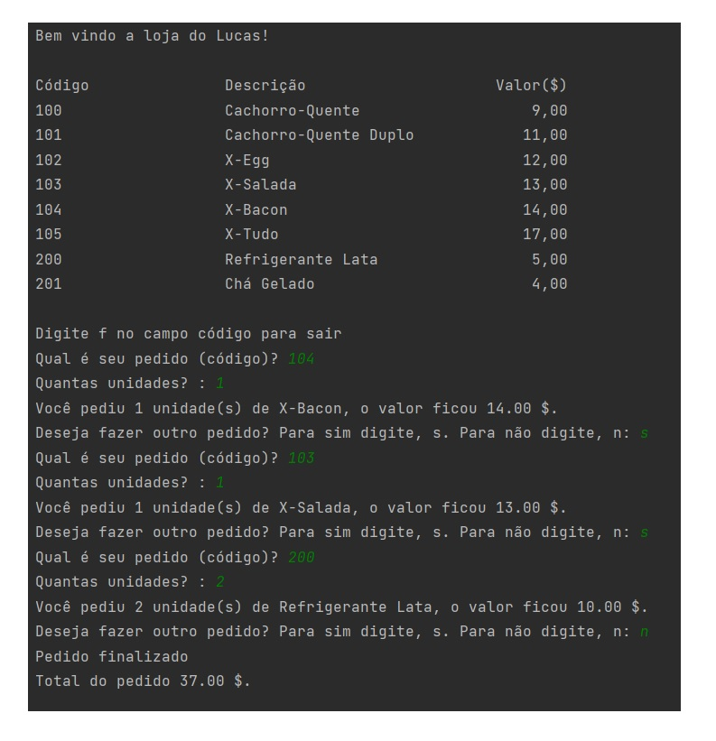
Tendo a funcionalidade do pedido, através da informação do cliente pelo código que se encontra no cardápio, retornando o valor total ao finalizar o pedido.
Agora mostrarei mais um exemplo, a funcionalidade do programa abaixo é calcular o desconto para o cliente baseado em unidades do produto que ele está comprando, retornando ao cliente o valor total e o desconto.
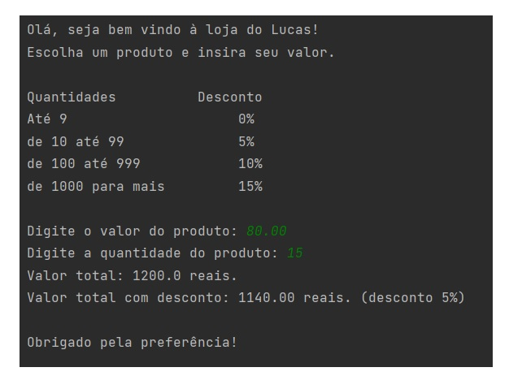
Tema 4
Outros trabalhos/ideias fora da matéria de engenharia
Agora gostaria de mostrar ideias postas em prática, que possuem correlação com a área de informática, mas não exatamente com as matérias vistas no curso, pelo menos por enquanto.
A imagem a abaixo é o convite do chá de noivos feito por mim, a pedido da minha esposa.
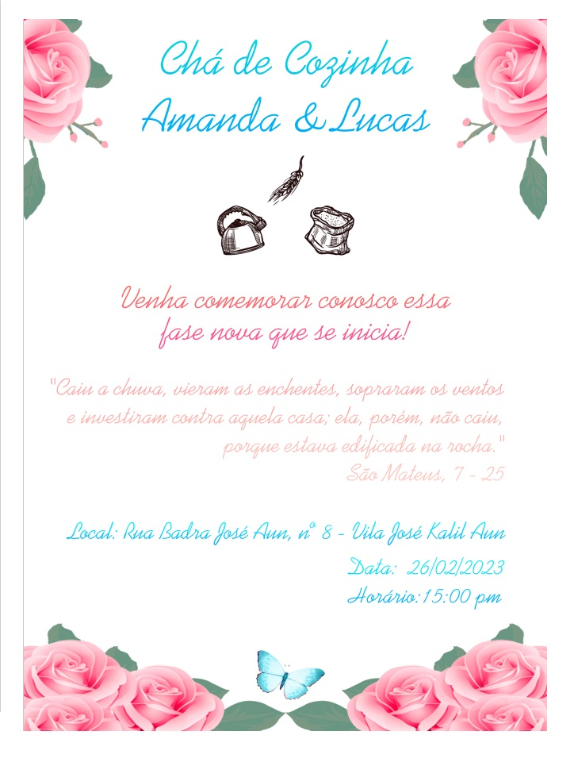
E abaixo nosso convite de casamento:
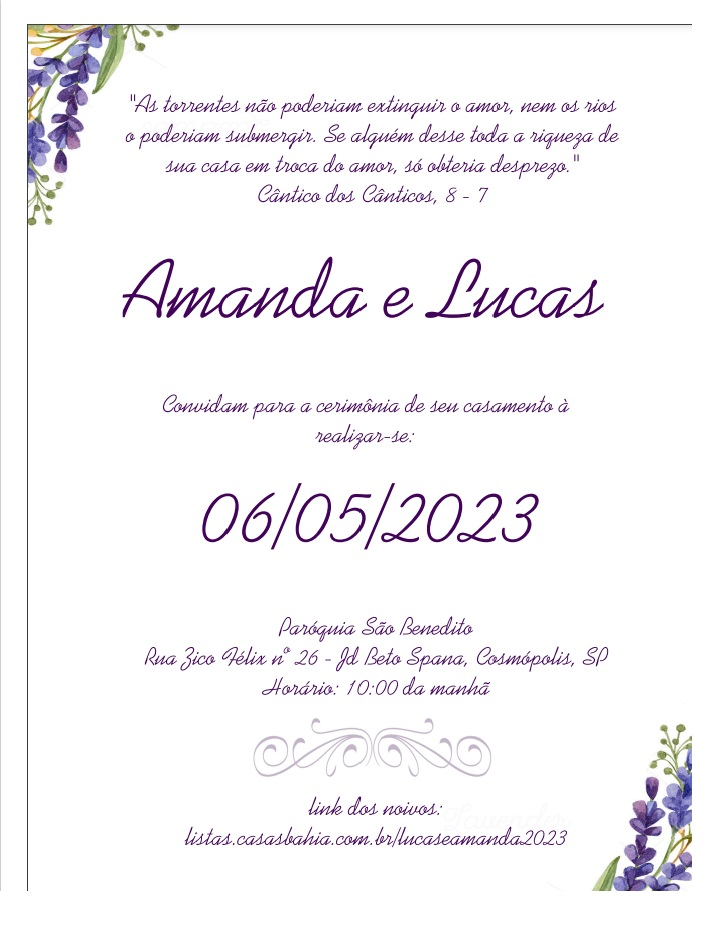
Imagem da mensagem para a lembrancinha

Tema 5
Agora compartilharei com vocês o primeiro projeto que me deu um retorno financeiro, ele não envolveu nenhuma programação, eu utilizei o notion, um aplicativo de notação para criar uma ata, como forma para os administradores ficarem cientes do que aconteceu nos turnos dos controladores de acesso e rondas pela web e celular sem sairem de casa. Essa imagem exemplifica o que foi feito e preserva todas as informações da empresa.
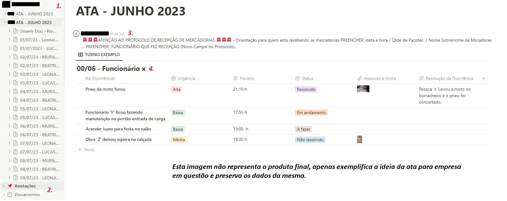
Explicação sobre a imagem acima conforme a numeração posta na imagem, acompanhem comigo:
- Espaço criado para armazenamento das atas, dividas por mês, aqui se o usário quiser pode ver no arquivo principal todos os turnos de uma só vez ou o turno especifíco nos sub blocos do notion.
- Espaço reservado para anotações pertinentes da portaria, sem precisar recorrer a papeís correntemente.
- Aqui é possível adicionar comentários pertinentes ao mês que estamos, sem precisar recorrer a anotação geral, ficando sempre no cabeçalho, sendo feito geralmente pela administração e acompanhado pelos controladores.
- Bloco para informação do que ocorreu no turno, podendo por a urgência da ocorrência, foto, e se a mesma já foi resolvida ou não.
Abaixo uma foto de um exemplo de ocorrência no notion, pneu da moto furado para fins ilustrativos(imagem do google), mostrando como a imagem fica ao ser aberta pelo usuário.
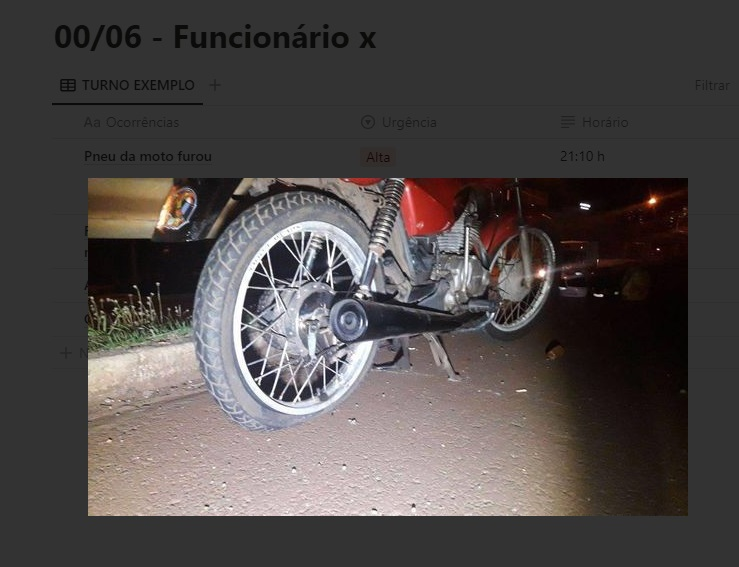
Tema 6
Gostaria de agradecer a todos que acompanharam até aqui um pouco da minha experiência na área de informática, espero que fique cada vez maior. Nós vemos por aí. Obrigado! 😀